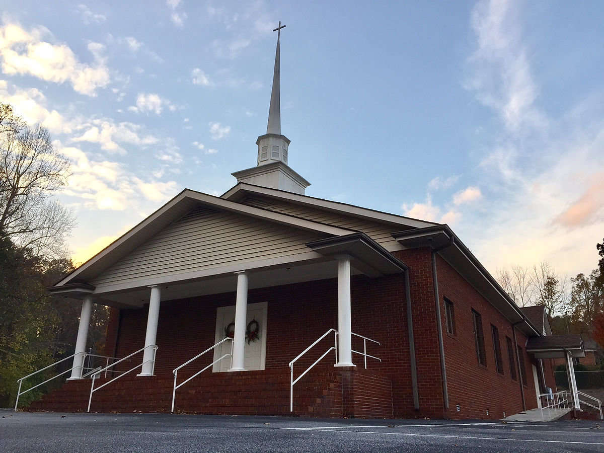

A Heritage of Faith Since 1914
Come experience worship the way it used to be.
Zion Hill Baptist Church is a traditional, independent Baptist church in Zirconia, North Carolina. We gather for old-time congregational singing, warm fellowship, and clear preaching from the King James Bible.
First Time Here?
Most guests ask three questions first: where is it, when is it, and what should we expect?
Where Is It?
58 Zion Hill Rd, Zirconia, NC 28790. Nestled in the Blue Ridge near Henderson County.
When Do You Meet?
Sunday School starts at 9:45 AM, followed by Morning Worship at 11:00 AM.
What Should I Expect?
Traditional KJV preaching, reverent congregational singing, prayer, and a welcoming church family.
Plan Your Visit
Whether you are a lifelong resident or just passing through the mountains, we would love to meet you this Sunday.
- Address58 Zion Hill Rd, Zirconia, NC 28790
- Sunday School9:45 AM
- Morning Worship11:00 AM
- Radio Ministry8:05 AM (WHKP)
Traditional worship, Bible preaching, and Christian fellowship.
We are committed to the old paths and the life-changing authority of God's Word.
Find Us Easily
Recent Sermons
Listen online through our simple sermon archive with mobile-friendly audio playback.
Walking by Faith
Morning Worship • February 15, 2026 • Pastor Blair Stewart
The Old Paths
WHKP Radio Ministry • February 8, 2026 • Pastor Blair Stewart
Psalm 23: The Shepherd and His Sheep
Sunday School • February 1, 2026

Meet Pastor Blair Stewart
Pastor Blair Stewart and his wife, Tina, lead with a heart for faithful preaching, caring fellowship, and gospel-centered ministry across Henderson County and surrounding communities.
What Families Say
A few words that reflect the spirit of church family life at Zion Hill.
"From our first Sunday, we were treated like family. The preaching is clear and rooted in Scripture."
Local Family, Henderson County"The old hymns and warm fellowship are exactly what we prayed to find in a church home."
Longtime Member"I listened on WHKP first, then visited in person. The same faithful spirit is there every week."
First-Time VisitorLife in the Mountains
Grounded worship, mountain heritage, and a church family committed to Christ.



Join Us This Sunday
We would be honored to worship with you. Need help before your visit? Call us or send a note through our contact page.